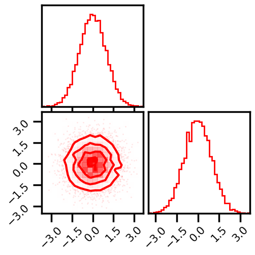
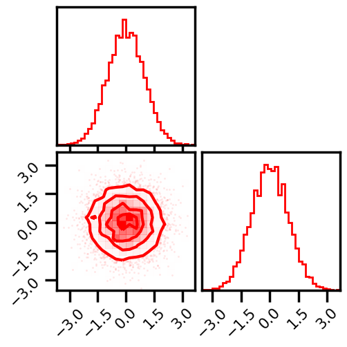
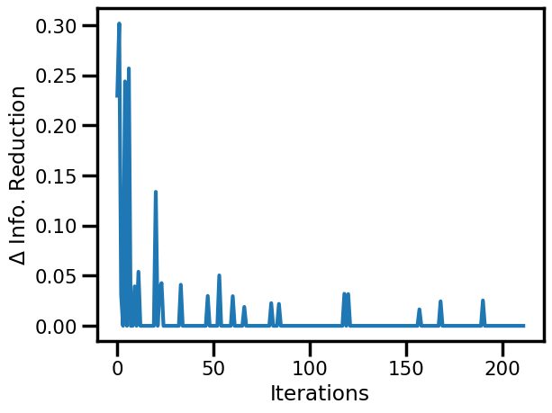
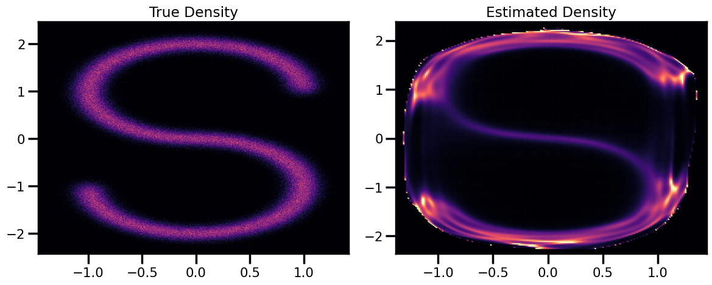
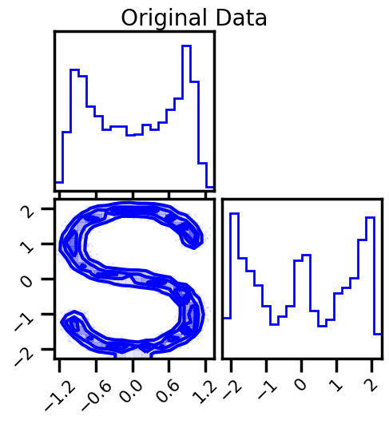
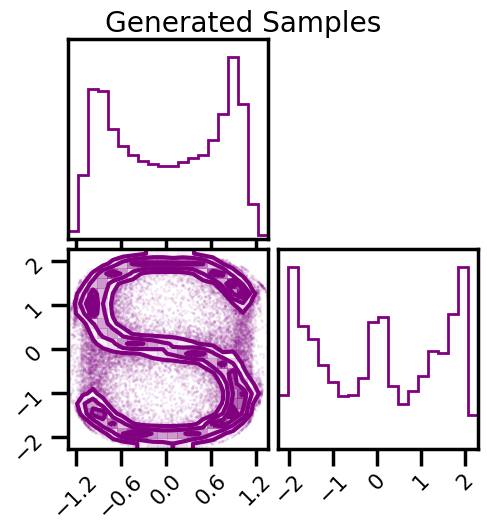

Demo - RBIG¶
# @title Install Packages
# %%capture
try:
import sys, os
from pyprojroot import here
# spyder up to find the root
root = here(project_files=[".here"])
# append to path
sys.path.append(str(root))
except ModuleNotFoundError:
import os
os.system("pip install chex")
os.system("pip install git+https://github.com/IPL-UV/rbig_jax.git#egg=rbig_jax")
# jax packages
import jax
import jax.numpy as jnp
from jax.config import config
# import chex
config.update("jax_enable_x64", True)
import chex
import numpy as np
from functools import partial
# library functions
from rbig_jax.data import get_classic
from rbig_jax.plots import plot_joint, plot_joint_prob, plot_info_loss
KEY = jax.random.PRNGKey(123)
# logging
import tqdm
import wandb
# plot methods
import matplotlib.pyplot as plt
from matplotlib import cm
import seaborn as sns
import corner
from IPython.display import HTML
%matplotlib inline
sns.reset_defaults()
sns.set_context(context="poster", font_scale=0.7)
# %load_ext lab_black
# %load_ext autoreload
# %autoreload 2
INFO:tensorflow:Enabling eager execution
INFO:tensorflow:Enabling v2 tensorshape
INFO:tensorflow:Enabling resource variables
INFO:tensorflow:Enabling tensor equality
INFO:tensorflow:Enabling control flow v2
WARNING:absl:No GPU/TPU found, falling back to CPU. (Set TF_CPP_MIN_LOG_LEVEL=0 and rerun for more info.)
Demo Data¶
from rbig_jax.data import SCurveDataset as PlaneDataset
from sklearn.preprocessing import StandardScaler
# %%wandb
# get data
seed = 123
n_samples = 1_000_000
n_features = 2
noise = 0.1
n_train = 5_000
n_valid = 1_000
ds = PlaneDataset(n_samples=n_train, noise=noise, seed=seed)
data = ds[:]
# plot data
fig = corner.corner(data, color="blue", hist_bin_factor=2)
X = jnp.array(data, dtype=np.float64)
Model¶
from rbig_jax.models import RBIG
# a lot of parameters...
support_extension = 20
precision = 1_000
eps = 1e-5
method = "kde"
# Histogram specific params
nbins = None
alpha = 1e-5
# KDE specific params
bw = "scott"
# info reduction loss parameters
max_layers = 1_000
zero_tolerance = 60
p = 0.25
base = 2
# initialize the max layers parameters
verbose = True
n_layers_remove = 40
interval = 10
# everything (makes it fast...)
jitted = True
Training¶
X_g, rbig_model = RBIG(
X=X,
support_extension=support_extension,
method=method,
precision=precision,
alpha=alpha,
nbins=nbins,
bw=bw,
eps=eps,
max_layers=max_layers,
zero_tolerance=zero_tolerance,
p=p,
base=base,
verbose=verbose,
n_layers_remove=n_layers_remove,
interval=interval,
jitted=jitted,
)
Layer 10 - Cum. Info Reduction: 2.063 - Elapsed Time: 5.2067 secs
Layer 20 - Cum. Info Reduction: 2.156 - Elapsed Time: 6.8024 secs
Layer 30 - Cum. Info Reduction: 2.370 - Elapsed Time: 8.3549 secs
Layer 40 - Cum. Info Reduction: 2.411 - Elapsed Time: 9.8340 secs
Layer 50 - Cum. Info Reduction: 2.455 - Elapsed Time: 11.3444 secs
Layer 60 - Cum. Info Reduction: 2.455 - Elapsed Time: 12.9009 secs
Layer 70 - Cum. Info Reduction: 2.500 - Elapsed Time: 14.4444 secs
Layer 80 - Cum. Info Reduction: 2.535 - Elapsed Time: 16.1020 secs
Layer 90 - Cum. Info Reduction: 2.568 - Elapsed Time: 18.6512 secs
Layer 100 - Cum. Info Reduction: 2.568 - Elapsed Time: 20.1270 secs
Layer 110 - Cum. Info Reduction: 2.602 - Elapsed Time: 21.7564 secs
Layer 120 - Cum. Info Reduction: 2.633 - Elapsed Time: 23.2975 secs
Layer 130 - Cum. Info Reduction: 2.657 - Elapsed Time: 24.9704 secs
Layer 140 - Cum. Info Reduction: 2.657 - Elapsed Time: 26.5537 secs
Layer 150 - Cum. Info Reduction: 2.689 - Elapsed Time: 28.0505 secs
Layer 160 - Cum. Info Reduction: 2.689 - Elapsed Time: 29.5700 secs
Layer 170 - Cum. Info Reduction: 2.689 - Elapsed Time: 31.0775 secs
Layer 180 - Cum. Info Reduction: 2.689 - Elapsed Time: 32.6327 secs
Layer 190 - Cum. Info Reduction: 2.689 - Elapsed Time: 34.3381 secs
Layer 200 - Cum. Info Reduction: 2.689 - Elapsed Time: 36.7981 secs
Converged at Layer: 207
Final Number of layers: 167 (Blocks: 55)
Total Time: 37.9261 secs
Gaussianized Data¶
Training Loop¶
# plot data
fig = corner.corner(X_g, color="red", hist_bin_factor=2)
plt.show()

From Model¶
%%time
X_g_ = rbig_model.forward(X)
# plot data
fig = corner.corner(X_g_, color="red", hist_bin_factor=2)
plt.show()

CPU times: user 21 s, sys: 1.11 s, total: 22.1 s
Wall time: 19.3 s
Information Reduction Evolution¶
fig, ax = plt.subplots()
ax.plot(rbig_model.info_loss)
ax.set(xlabel="Iterations", ylabel="$\Delta$ Info. Reduction")
plt.show()

Negative Log-Likelihood¶
nll = rbig_model.score(X)
print(f"NLL Score: {nll:.4f}")
NLL Score: 1.5169
Density Estimation¶
from rbig_jax.data import generate_2d_grid
# generate inputs
xyinput = generate_2d_grid(X, 200, buffer=0.1)
X_log_prob = rbig_model.score_samples(xyinput)
Generate Grid Points¶
# Original Density
from matplotlib import cm
n_samples = 1_000_000
n_features = 2
ds = PlaneDataset(n_samples=n_samples, seed=42)
X_plot = ds[:]
# X_plot = scaler.transform(X_plot)
Plot - Compare¶
# Estimated Density
cmap = cm.magma # "Reds"
probs = jnp.exp(X_log_prob)
fig, ax = plt.subplots(ncols=2, figsize=(12, 5))
h = ax[0].hist2d(
X_plot[:, 0], X_plot[:, 1], bins=512, cmap=cmap, density=True, vmin=0.0, vmax=1.0
)
ax[0].set_title("True Density")
ax[0].set(
xlim=[X_plot[:, 0].min(), X_plot[:, 0].max()],
ylim=[X_plot[:, 1].min(), X_plot[:, 1].max()],
)
h1 = ax[1].scatter(
xyinput[:, 0], xyinput[:, 1], s=1, c=probs, cmap=cmap, vmin=0.0, vmax=1.0
)
ax[1].set(
xlim=[xyinput[:, 0].min(), xyinput[:, 0].max()],
ylim=[xyinput[:, 1].min(), xyinput[:, 1].max()],
)
# plt.colorbar(h1)
ax[1].set_title("Estimated Density")
plt.tight_layout()
plt.show()

Sampling¶
%%time
# number of samples
n_samples = 100_000
seed = 42
X_samples = rbig_model.sample(seed=seed, n_samples=n_samples)
CPU times: user 35.8 s, sys: 1.72 s, total: 37.5 s
Wall time: 13.6 s
fig = corner.corner(X, color="blue", label="Original Data")
fig.suptitle("Original Data")
plt.show()
fig2 = corner.corner(X_samples, color="purple")
fig2.suptitle("Generated Samples")
plt.show()


Saving and Loading¶
Often times it would be nice to save and load models. This is useful for checkpointing (during training) and also for convenience if you’re doing research on google colab.
Fortunately, everything here are python objects, so we can easily save and load our models via pickle.
Saving¶
Do to the internals of python (and design choices within this library), one can only store objects. So that includes the rbig_block, the bijectors and also the rbig_model. This does not include the rbig_block_init for example because that isn’t an object, it’s a function with some local params.
# import pickle
# # save the blocks
# with open("rbig_block.pickle", "wb") as f:
# pickle.dump(rbig_block, f)
# save the bijectors
# with open("bijectors.pickle", "wb") as f:
# pickle.dump(bijectors, f)
# # save the full model
# with open("rbig_model_test.pickle", "wb") as f:
# pickle.dump(rbig_model, f)
import joblib
joblib.dump(rbig_model, "rbig_model_test.pickle")
['rbig_model_test.pickle']
Loading¶
Loading is straight forward!
# with open("rbig_model.pickle", "rb") as f:
# rbig_model_loaded = pickle.load(f)
rbig_model_loaded = joblib.load("rbig_model_test.pickle")
Simple Test¶
They won’t be the exact same byte-for-byte encoding. But they should give the same results either way :).
# nll for the old model
nll = rbig_model.score(X)
# nll for the loaded model
nll_loaded = rbig_model_loaded.score(X)
# check that they're the same
chex.assert_tree_all_close(nll, nll_loaded)
print(f"NLL (Original): {nll:.4f}")
print(f"NLL (Loaded): {nll_loaded:.4f}")
NLL (Original): 1.5169
NLL (Loaded): 1.5169